DDD实战课
13 | 代码模型（上）：如何使用DDD设计微服务代码模型？
微服务代码模型
DDD 并没有给出标准的代码模型
微服务一级目录结构
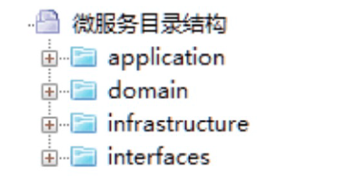
Interfaces（用户接口层）
Application（应用层）
- 它主要存放应用层服务组合和编排相关的代码。应用服务向下基于微服务内的领域服务或外部微服务的应用服务完成服务的编排和组合，向上为用户接口层提供各种应用数据展现支持服务。应用服务和事件等代码会放在这一层目录里。
Domain（领域层）
- 它主要存放领域层核心业务逻辑相关的代码。领域层可以包含多个聚合代码包，它们共同实现领域模型的核心业务逻辑。聚合以及聚合内的实体、方法、领域服务和事件等代码会放在这一层目录里。
Infrastructure（基础层）
- 它主要存放基础资源服务相关的代码，为其它各层提供的通用技术能力、三方软件包、数据库服务、配置和基础资源服务的代码都会放在这一层目录里。
各层目录结构
- 用户接口层
Assembler
- 实现 DTO 与领域对象之间的相互转换和数据交换。一般来说 Assembler 与DTO 总是一同出现。
Dto
- 它是数据传输的载体，内部不存在任何业务逻辑，我们可以通过 DTO 把内部的领域对象与外界隔离。
Facade
- 提供较粗粒度的调用接口，将用户请求委派给一个或多个应用服务进行处理。
- 应用层
Event（事件）
- 这层目录主要存放事件相关的代码。它包括两个子目录：publish 和subscribe。前者主要存放事件发布相关代码，后者主要存放事件订阅相关代码（事件处理相关的核心业务逻辑在领域层实现）。
Service（应用服务）
- 这层的服务是应用服务。应用服务会对多个领域服务或外部应用服务进行封装、编排和组合，对外提供粗粒度的服务。应用服务主要实现服务组合和编排，是一段独立的业务逻辑。
- 领域层
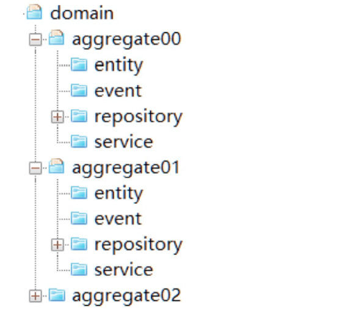
Aggregate（聚合）
- 它是聚合软件包的根目录，可以根据实际项目的聚合名称命名，比如权限聚合。在聚合内定义聚合根、实体和值对象以及领域服务之间的关系和边界。聚合内实现高内聚的业务逻辑，它的代码可以独立拆分为微服务。
Entity（实体）
- 它存放聚合根、实体、值对象以及工厂模式（Factory）相关代码。实体类采用充血模型，同一实体相关的业务逻辑都在实体类代码中实现。跨实体的业务逻辑代码在领域服务中实现。
Event（事件）
- 它存放事件实体以及与事件活动相关的业务逻辑代码。
Service（领域服务）
- 它存放领域服务代码。一个领域服务是多个实体组合出来的一段业务逻辑。你可以将聚合内所有领域服务都放在一个领域服务类中，你也可以把每一个领域服务设计为一个类。如果领域服务内的业务逻辑相对复杂，我建议你将一个领域服务设计为一个领域服务类，避免由于所有领域服务代码都放在一个领域服务类中，而出现代码臃肿的问题。领域服务封装多个实体或方法后向上层提供应用服务调用。
Repository（仓储）
- 它存放所在聚合的查询或持久化领域对象的代码，通常包括仓储接口和仓储实现方法。为了方便聚合的拆分和组合，我们设定了一个原则：一个聚合对应一个仓储。
- 特别说明：按照 DDD 分层架构，仓储实现本应该属于基础层代码，但为了在微服务架构演进时，保证代码拆分和重组的便利性，我是把聚合仓储实现的代码放到了聚合包内。这样，如果需求或者设计发生变化导致聚合需要拆分或重组时，我们就可以将包括核心业务逻辑和仓储代码的聚合包整体迁移，轻松实现微服务架构演进。
- 基础层
- Config：主要存放配置相关代码。
- Util：主要存放平台、开发框架、消息、数据库、缓存、文件、总线、网关、第三方类库、通用算法等基础代码，你可以为不同的资源类别建立不同的子目录。
总结
第一点：聚合之间的代码边界一定要清晰。
- 聚合之间的服务调用和数据关联应该是尽可能的松耦合和低关联，聚合之间的服务调用应该通过上层的应用层组合实现调用，原则上不允许聚合之间直接调用领域服务。
- 这种松耦合的代码关联，在以后业务发展和需求变更时，可以很方便地实现业务功能和聚合代码的重组，在微服务架构演进中将会起到非常重要的作用。
第二点：你一定要有代码分层的概念。
- 写代码时一定要搞清楚代码的职责，将它放在职责对应的代码目录内。
- 应用层代码主要完成服务组合和编排，以及聚合之间的协作，它是很薄的一层，不应该有核心领域逻辑代码。
- 领域层是业务的核心，领域模型的核心逻辑代码一定要在领域层实现。
- 如果将核心领域逻辑代码放到应用层，你的基于 DDD 分层架构模型的微服务慢慢就会演变成传统的三层架构模型了。
14 | 代码模型（下）：如何保证领域模型与代码模型的一致性？
领域对象的整理
- 完成微服务拆分后，领域模型的边界和领域对象就基本确定了。
- 我们第一个重要的工作就是，整理事件风暴过程中产生的各个领域对象，比如：聚合、实体、命令和领域事件等内容，将这些领域对象和业务行为记录到下面的表格中。
- 表格里包含了：领域模型、聚合、领域对象和领域类型四个维度。一个领域模型会包含多个聚合，一个聚合包含多个领域对象，每个领域对象都有自己的领域类型。领域类型主要标识领域对象的属性，比如：聚合根、实体、命令和领域事件等类型。
- 例子
- 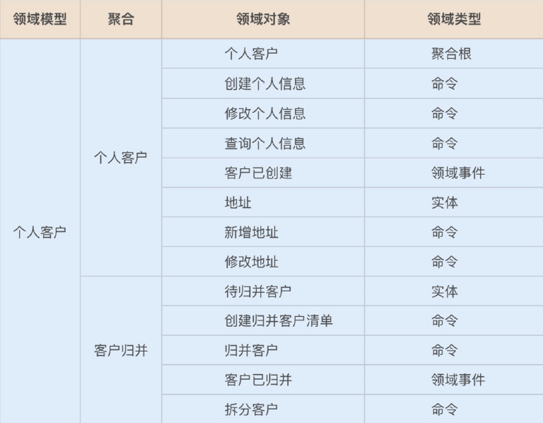
从领域模型到微服务的设计
从领域模型到微服务落地，我们还需要做进一步的设计和分析。事件风暴中提取的领域对象，还需要经过用户故事或领域故事分析，以及微服务设计，才能用于微服务系统开发。
这个过程会比事件风暴来的更深入和细致。主要关注内容如下：
- 分析微服务内有哪些服务？
- 服务所在的分层？
- 应用服务由哪些服务组合和编排完成？
- 领域服务包括哪些实体的业务逻辑？
- 采用充血模型的实体有哪些属性和方法？
- 有哪些值对象？
- 哪个实体是聚合根等？
最后梳理出所有的领域对象和它们之间的依赖关系，我们会给每个领域对象设计对应的代码对象，定义它们所在的软件包和代码目录。
领域层的领域对象
事件风暴结束时，领域模型聚合内一般会有：聚合、实体、命令和领域事件等领域对象。在完成故事分析和微服务设计后，微服务的聚合内一般会有：聚合、聚合根、实体、值对象、领域事件、领域服务和仓储等领域对象。
领域对象是怎么得来的？
- 设计实体
- 大多数情况下，领域模型的业务实体与微服务的数据库实体是一一对应的。但某些领域模型的实体在微服务设计时，可能会被设计为多个数据实体，或者实体的某些属性被设计为值对象。
- 我们分析个人客户时，还需要有地址、电话和银行账号等实体，它们被聚合根引用，不容易在领域建模时发现，我们需要在微服务设计过程中识别和设计出来。
- 在分层架构里，实体采用充血模型，在实体类内实现实体的全部业务逻辑。这些不同的实体都有自己的方法和业务行为，比如地址实体有新增和修改地址的方法，银行账号实体有新增和修改银行账号的方法。
- 实体类放在领域层的 Entity 目录结构下。
- 找出聚合根
- 聚合根来源于领域模型，在个人客户聚合里，个人客户这个实体是聚合根，它负责管理地址、电话以及银行账号的生命周期。
- 个人客户聚合根通过工厂和仓储模式，实现聚合内地址、银行账号等实体和值对象数据的初始化和持久化。
- 聚合根是一种特殊的实体，它有自己的属性和方法。聚合根可以实现聚合之间的对象引用，还可以引用聚合内的所有实体。聚合根类放在代码模型的 Entity 目录结构下。聚合根有自己的实现方法，比如生成客户编码，新增和修改客户信息等方法。
- 设计值对象
- 根据需要将某些实体的某些属性或属性集设计为值对象。值对象类放在代码模型的 Entity目录结构下。在个人客户聚合中，客户拥有客户证件类型，它是以枚举值的形式存在，所以将它设计为值对象。
- 有些领域对象可以设计为值对象，也可以设计为实体，我们需要根据具体情况来分析。如果这个领域对象在其它聚合内维护生命周期，且在它依附的实体对象中只允许整体替换，我们就可以将它设计为值对象。如果这个对象是多条且需要基于它做查询统计，我建议将它设计为实体。
- 设计领域事件
- 如果领域模型中领域事件会触发下一步的业务操作，我们就需要设计领域事件。首先确定领域事件发生在微服务内还是微服务之间。然后设计事件实体对象，事件的发布和订阅机制，以及事件的处理机制。判断是否需要引入事件总线或消息中间件。
- 如果一个业务动作或行为跨多个实体，我们就需要设计领域服务。领域服务通过对多个实体和实体方法进行组合，完成核心业务逻辑。你可以认为领域服务是位于实体方法之上和应用服务之下的一层业务逻辑。
- 设计领域服务
- 按照严格分层架构层的依赖关系，如果实体的方法需要暴露给应用层，它需要封装成领域服务后才可以被应用服务调用。所以如果有的实体方法需要被前端应用调用，我们会将它封装成领域服务，然后再封装为应用服务。
- 个人客户聚合根这个实体创建个人客户信息的方法，被封装为创建个人客户信息领域服务。然后再被封装为创建个人客户信息应用服务，向前端应用暴露。
- 领域服务类放在领域层的 Service 目录结构下。
- 设计仓储
- 每一个聚合都有一个仓储，仓储主要用来完成数据查询和持久化操作。仓储包括仓储的接口和仓储实现，通过依赖倒置实现应用业务逻辑与数据库资源逻辑的解耦。仓储代码放在领域层的 Repository 目录结构下。
应用层的领域对象
应用层的主要领域对象是应用服务和事件的发布以及订阅。
服务的封装和调用方式
- 实体方法的封装
- 实体方法是最底层的原子业务逻辑。如果单一实体的方法需要被跨层调用，你可以将它封装成领域服务，这样封装的领域服务就可以被应用服务调用和编排了。
- 封装时服务前面的名字可以保持一致，你可以用 *DomainService 或 *AppService 后缀来区分领域服务或应用服务。
- 领域服务的组合和封装
- 领域服务会对多个实体和实体方法进行组合和编排，供应用服务调用。如果它需要暴露给用户接口层，领域服务就需要封装成应用服务。
- 应用服务的组合和编排
- 应用服务会对多个领域服务进行组合和编排，暴露给用户接口层，供前端应用调用。
- 在应用服务组合和编排时，你需要关注一个现象：多个应用服务可能会对多个同样的领域服务重复进行同样业务逻辑的组合和编排。当出现这种情况时，你就需要分析是不是领域服务可以整合了。你可以将这几个不断重复组合的领域服务，合并到一个领域服务中实现。这样既省去了应用服务的反复编排，也实现了服务的演进。这样领域模型将会越来越精炼，更能适应业务的要求。
应用服务类放在应用层 Service 目录结构下。领域事件的发布和订阅类放在应用层 Event目录结构下。
典型的领域模型
图示
- 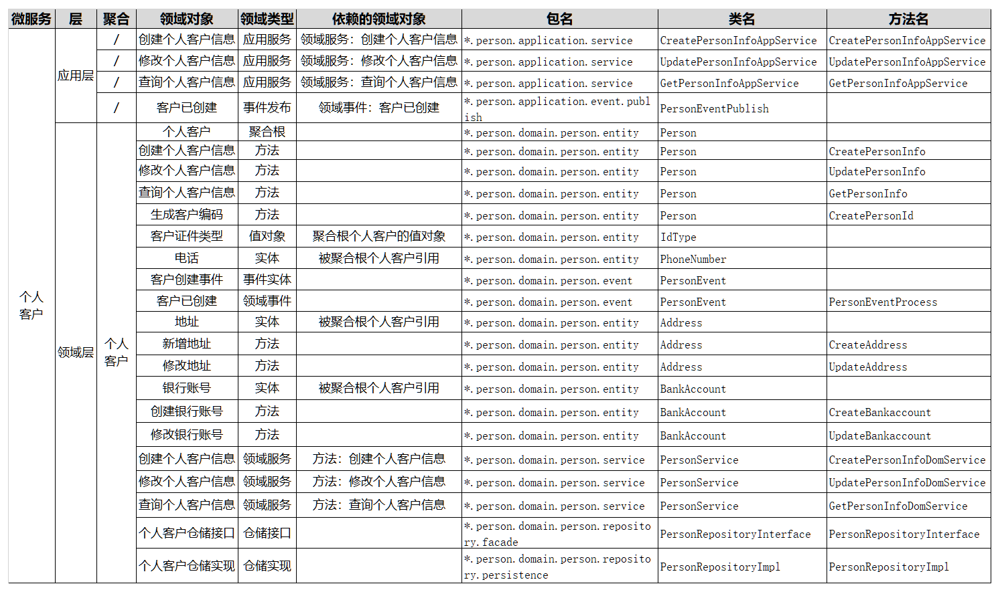
说明
层
- 定义领域对象位于分层架构中的哪一层，比如：接口层、应用层、领域层以及基础层等。
领域对象
- 领域模型中领域对象的具体名称。
领域类型
- 根据 DDD 知识体系定义的领域对象的类型，包括：限界上下文、聚合、聚合根、实体、值对象、领域事件、应用服务、领域服务和仓储服务等领域类型。
依赖的领域对象
- 根据业务对象依赖或分层调用的依赖关系，建立的领域对象的依赖关系，比如：服务调用依赖、关联对象聚合等。
包名
- 代码模型中的包名，对应领域对象所在的软件包。
类名
- 代码模型中的类名，对应领域对象的类名。
方法名
- 代码模型中的方法名，对应领域对象实现或操作的方法名。
非典型领域模型
有些业务场景可能并不能如你所愿，你可能无法设计出典型的领域模型。这类业务中有多个实体，实体之间相互独立，是松耦合的关系，这些实体主要参与分析或者计算，你找不出聚合根，但就业务本身来说它们是高内聚的。而它们所组合的业务与其它聚合是在一个限界上下文内，你也不大可能将它单独设计为一个微服务。
这种业务场景其实很常见。比如，在个人客户领域模型内有客户归并的聚合，它扫描所有客户，按照身份证号码、电话号码等是否重复的业务规则，判断是否是重复的客户，然后对重复的客户进行归并。这种业务场景你就找不到聚合根。
对于这类非典型模型，我们怎么办？
- 我们还是可以借鉴聚合的思想，仍然用聚合来定义这部分功能，并采用与典型领域模型同样的分析方法，建立实体的属性和方法，对方法和服务进行封装和分层设计，设计仓储，建立领域对象之间的依赖关系。唯一可惜的就是我们依然找不到聚合根，不过也没关系，除了聚合根管理功能外，我们还可以用 DDD 的其它设计方法。
15 | 边界：微服务的各种边界在架构演进中的作用？
演进式架构
在微服务设计和实施的过程中，很多人认为：“将单体拆分成多少个微服务，是微服务的设计重点。”可事实真的是这样吗？其实并非如此！
Martin Fowler 在提出微服务时，他提到了微服务的一个重要特征——演进式架构。演进式架构就是以支持增量的、非破坏的变更作为第一原则，同时支持在应用程序结构层面的多维度变化。
如何判断微服务设计是否合理呢？
- 其实很简单，只需要看它是否满足这样的情形就可以了：随着业务的发展或需求的变更，在不断重新拆分或者组合成新的微服务的过程中，不会大幅增加软件开发和维护的成本，并且这个架构演进的过程是非常轻松、简单的。
这也是微服务设计的重点，就是看微服务设计是否能够支持架构长期、轻松的演进。
微服务还是小单体？
- 有些项目团队在将集中式单体应用拆分为微服务时，首先进行的往往不是建立领域模型，而只是按照业务功能将原来单体应用的一个软件包拆分成多个所谓的“微服务”软件包，而这些“微服务”内的代码仍然是集中式三层架构的模式，“微服务”内的代码高度耦合，逻辑边界不清晰，这里我们暂且称它为“小单体微服务”。
- 而随着新需求的提出和业务的发展，这些小单体微服务会慢慢膨胀起来。当有一天你发现这些膨胀了的微服务，有一部分业务功能需要拆分出去，或者部分功能需要与其它微服务进行重组时，你会发现原来这些看似清晰的微服务，不知不觉已经摇身一变，变成了臃肿油腻的大单体了，而这个大单体内的代码依然是高度耦合且边界不清的。
- 这种单体式微服务只定义了一个维度的边界，也就是微服务之间的物理边界，本质上还是单体架构模式。微服务设计时要考虑的不仅仅只有这一个边界，别忘了还要定义好微服务内的逻辑边界和代码边界，这样才能得到你想要的结果。
微服务边界的作用
逻辑边界
- 主要定义同一业务领域或应用内紧密关联的对象所组成的不同聚类的组合之间的边界。
- 微服务内聚合之间的边界就是逻辑边界。一般来说微服务会有一个以上的聚合，在开发过程中不同聚合的代码隔离在不同的聚合代码目录中。
- 逻辑边界在微服务设计和架构演进中具有非常重要的意义！
- 微服务的架构演进并不是随心所欲的，需要遵循一定的规则，这个规则就是逻辑边界。微服务架构演进时，在业务端以聚合为单位进行业务能力的重组，在微服务端以聚合的代码目录为单位进行微服务代码的重组。由于按照 DDD 方法设计的微服务逻辑边界清晰，业务高内聚，聚合之间代码松耦合，因此在领域模型和微服务代码重构时，我们就不需要花费太多的时间和精力了。
- 随着业务的快速发展，如果某一个微服务遇到了高性能挑战，需要将部分业务能力独立出去，我们就可以以聚合为单位，将聚合代码拆分独立为一个新的微服务，这样就可以很容易地实现微服务的拆分。
- 另外，我们也可以对多个微服务内有相似功能的聚合进行功能和代码重组，组合为新的聚合和微服务，独立为通用微服务。
物理边界
- 主要从部署和运行的视角来定义微服务之间的边界。不同微服务部署位置和运行环境是相互物理隔离的，分别运行在不同的进程中。这种边界就是微服务之间的物理边界。
代码边界
- 主要用于微服务内的不同职能代码之间的隔离。微服务开发过程中会根据代码模型建立相应的代码目录，实现不同功能代码的隔离。由于领域模型与代码模型的映射关系，代码边界直接体现出业务边界。代码边界可以控制代码重组的影响范围，避免业务和服务之间的相互影响。微服务如果需要进行功能重组，只需要以聚合代码为单位进行重组就可以了。
正确理解微服务的边界
- 聚合是否也一定要设计成微服务呢？答案是不一定的，这里就涉及到微服务过度拆分的问题了。
- 微服务的过度拆分会使软件维护成本上升，比如：集成成本、发布成本、运维成本以及监控和定位问题的成本等。在项目建设初期，如果你不具备较强的微服务管理能力，那就不宜将微服务拆分过细。当我们具备一定的能力以后，且微服务内部的逻辑和代码边界也很清晰，你就可以随时根据需要，拆分出新的微服务，实现微服务的架构演进了。
16 | 视图：如何实现服务和数据在微服务各层的协作？
服务的协作
- 服务的类型
- Facade 服务
- 应用服务
- 领域服务
- 基础服务
- 服务的调用
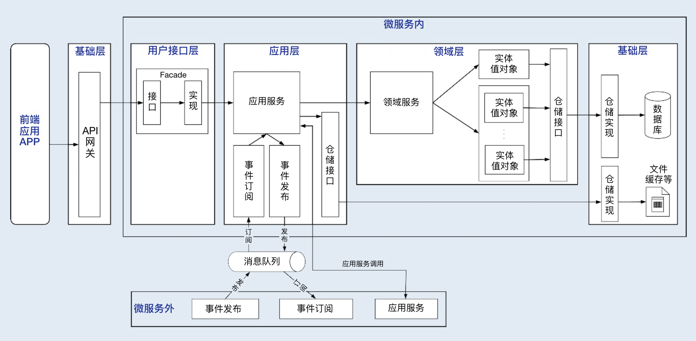
三类主要场景
微服务内跨层服务调用
微服务架构下往往采用前后端分离的设计模式，前端应用独立部署。
前端应用调用发布在API 网关上的 Facade 服务，Facade 定向到应用服务。
应用服务作为服务组织和编排者，它的服务调用有这样两种路径：
- 第一种是应用服务调用并组装领域服务。此时领域服务会组装实体和实体方法，实现核心领域逻辑。领域服务通过仓储服务获取持久化数据对象，完成实体数据初始化。
- 第二种是应用服务直接调用仓储服务。这种方式主要针对像缓存、文件等类型的基础层数据访问。这类数据主要是查询操作，没有太多的领域逻辑，不经过领域层，不涉及数据库持久化对象。
微服务之间服务调用
- 微服务之间的应用服务可以直接访问，也可以通过 API 网关访问。由于跨微服务操作，在进行数据新增和修改操作时，你需关注分布式事务，保证数据的一致性。
领域事件驱动
- 领域事件驱动包括微服务内和微服务之间的事件。微服务内通过事件总线（EventBus）完成聚合之间的异步处理。微服务之间通过消息中间件完成。异步化的领域事件驱动机制是一种间接的服务访问方式。
- 服务的封装与组合
- 两种分层架构的服务依赖关系
分层架构有一个重要的原则就是：每层只能与位于其下方的层发生耦合。
那根据耦合的紧密程度，分层架构可以分为两种：严格分层架构和松散分层架构。在严格分层架构中，任何层只能与位于其直接下方的层发生依赖。在松散分层架构中，任何层可以与其任意下方的层发生依赖。
松散分层架构的服务依赖
- 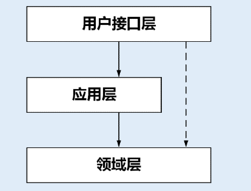
- 但它存在一些问题，第一个是容易暴露领域层核心业务的实现逻辑；
- 第二个是当实体方法或领域服务发生服务变更时，由于服务同时被多层服务调用和组合，不容易找出哪些上层服务调用和组合了它，不方便通知到所有的服务调用方。
严格分层架构的服务依赖
- 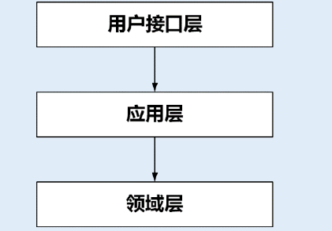
- 在严格分层架构中，每一层服务只能向紧邻的上一层提供服务。虽然实体、实体方法和领域服务都在领域层，但实体和实体方法只能暴露给领域服务，领域服务只能暴露给应用服务。
- 在严格分层架构中，服务如果需要跨层调用，下层服务需要在上层封装后，才可以提供跨层服务。比如实体方法需要向应用服务提供服务，它需要封装成领域服务。
- 这是因为通过封装你可以避免将核心业务逻辑的实现暴露给外部，将实体和方法封装成领域服务，也可以避免在应用层沉淀过多的本该属于领域层的核心业务逻辑，避免应用层变得臃肿。还有就是当服务发生变更时，由于服务只被紧邻上层的服务调用和组合，你只需要逐级告知紧邻上层就可以了，服务可管理性比松散分层架构要好是一定的。
数据对象视图
在 DDD 中有很多的数据对象，这些对象分布在不同的层里。它们在不同的阶段有不同的形态。
微服务内有哪些类型的数据对象？
数据持久化对象 PO(Persistent Object)，与数据库结构一一映射，是数据持久化过程中的数据载体。
领域对象 DO（Domain Object），微服务运行时的实体，是核心业务的载体。
数据传输对象 DTO（Data Transfer Object），用于前端与应用层或者微服务之间的数据组装和传输，是应用之间数据传输的载体。
视图对象 VO（View Object），用于封装展示层指定页面或组件的数据。
各层数据对象的职责和转换过程
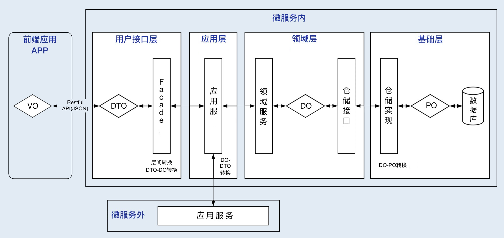
基础层
- 基础层的主要对象是 PO 对象。我们需要先建立 DO 和 PO 的映射关系。当 DO 数据需要持久化时，仓储服务会将 DO 转换为 PO 对象，完成数据库持久化操作。当 DO 数据需要初始化时，仓储服务从数据库获取数据形成 PO 对象，并将 PO 转换为 DO，完成数据初始化。
- 大多数情况下 PO 和 DO 是一一对应的。但也有 DO 和 PO 多对多的情况，在 DO 和 PO数据转换时，需要进行数据重组。
领域层
- 领域层的主要对象是 DO 对象。DO 是实体和值对象的数据和业务行为载体，承载着基础的核心业务逻辑。通过 DO 和 PO 转换，我们可以完成数据持久化和初始化。
应用层
- 应用层的主要对象是 DO 对象。如果需要调用其它微服务的应用服务，DO 会转换为DTO，完成跨微服务的数据组装和传输。
- 用户接口层先完成 DTO 到 DO 的转换，然后应用服务接收 DO 进行业务处理。如果 DTO 与 DO 是一对多的关系，这时就需要进行 DO数据重组。
用户接口层
- 用户接口层会完成 DO 和 DTO 的互转，完成微服务与前端应用数据交互及转换。Facade服务会对多个 DO 对象进行组装，转换为 DTO 对象，向前端应用完成数据转换和传输。
前端应用
- 前端应用主要是 VO 对象。展现层使用 VO 进行界面展示，通过用户接口层与应用层采用DTO 对象进行数据交互。
17 | 从后端到前端：微服务后，前端如何设计？
背景
- 微服务架构通常采用前后端分离的设计方式。作为企业级的中台，在完成单体应用拆分和微服务建设后，前端项目团队会同时面对多个中台微服务项目团队，这时候的前端人员就犹如维修电工一样了。
- 面对如此多的微服务暴露出来的 API 服务，如何进行正确的连接和拼装，才能保证不出错？这显然不是一件很容易的事情。而当服务出现变更时，又如何通知所有受影响的项目团队，这里面的沟通成本相信也不小。
- 相应的，要从一定程度上解决上述问题，我们是不是可以考虑先有效降低前端集成的复杂度呢？先做到前端聚合，后端解耦——这是一个很有意思的话题。
单体前端的困境
- 传统企业在完成中台转型后，虽然后台的业务完成了微服务架构的升级，但前端仍然是单体模式，由一个团队创建并维护一个前端应用。随着时间推移和业务发展，前端会变得越来越臃肿，越来越难维护。而随着 5G 和移动互联技术的应用，企业业务活动将会进一步移动化和线上化。过去很多企业的做法是为不同的业务开发出独立的 APP。但很显然用户并不想装那么多的 APP！
- 为了提高用户体验，实现统一运营，很多企业开始缩减和整合 APP，将企业内所有的业务能力都尽量集中到一个 APP 中。试想如果仍然沿用单体前端的设计模式。前端项目团队将面对多个中台微服务团队，需要集成成千上万的 API 服务，这就需要相当高的沟通成本和技术要求。这绝对会是一场灾难。
从单体前端到微前端
- 在前端设计时我们需要遵循单一职责和复用原则，按照领域模型和微服务边界，将前端页面进行拆分。同时构建多个可以独立部署、完全自治、松耦合的页面组合，其中每个组合只负责特定业务单元的 UI 元素和功能，这些页面组合就是微前端。
- 微前端与微服务一样，都是希望将单体应用，按照规则拆分，并重组为多个可以独立开发、独立测试、独立部署和独立运维，松耦合的微前端或者微服务。以适应业务快速变化及分布式多团队并行开发的要求。
业务单元的组合形态
我们可以参照领域模型和微服务边界，建立与微服务对应的前端操作界面，将它与微服务组成业务单元，以业务组件的方式对外提供服务。业务单元包括微前端和微服务，可以独立开发、测试、部署和运维，可以自包含地完成领域模型中部分或全部的业务功能。
图示
- 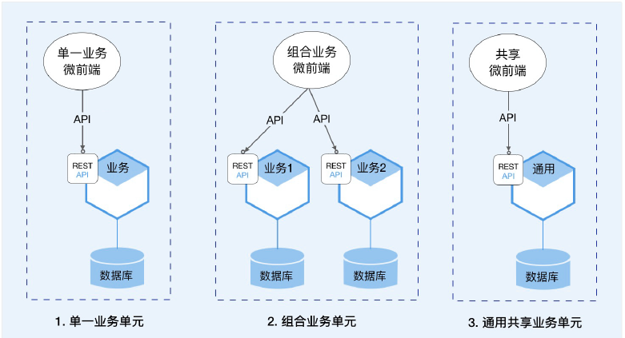
- 单一业务单元
- 一个微前端和一个微服务组成单一业务单元。微前端和微服务分别实现同一个领域模型从前端到后端的功能。
- 组合业务单元
- 一个微前端与多个微服务组成组合业务单元。微前端具有多个微服务的前端功能，完成较复杂的页面和操作。多个微服务实现各自领域模型的功能，向微前端提供可组合的服务。
- 通用共享业务单元
- 一个微前端与一个或多个通用中台微服务组合为通用共享业务单元。通用共享微前端以共享页面的方式与其它微前端页面协作，完成业务流程。很多通用中台微服务的微前端是共享的，比如订单和支付等微服务对应的订单和支付微前端界面。
微前端的集成方式
图示
- 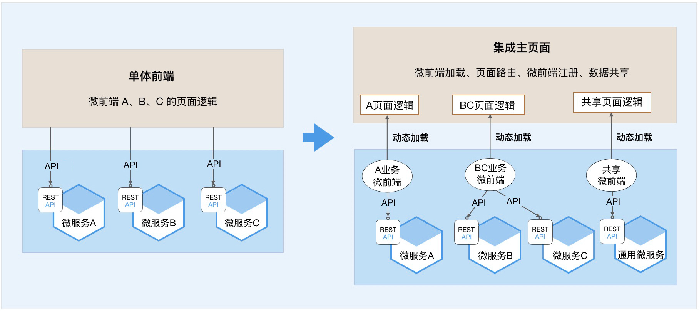
- 微前端与前端主页面的集成
- 前端主页面是企业级的前端页面，微前端是业务单元的前端页面。微前端通过主页面的微前端加载器，利用页面路由和动态加载等技术，将特定业务单元的微前端页面动态加载到前端主页面，实现前端主页面与微前端页面的“拼图式”集成。
- 微前端与微服务的集成
- 微前端与微服务独立开发，独立部署。在微前端注册到前端主页面前，微前端需要与微服务完成集成。它的集成方式与传统前后端分离的集成方式没有差异。微服务将服务发布到 API网关，微前端调用发布在 API 网关中的服务，即完成业务单元内的前后端集成。
团队职责边界
当你采用业务单元化的开发方式后，前后端项目团队职责和应用边界会更清晰，可以降低前后端集成的复杂度。
前端项目团队
- 专注于前端集成主页面与微前端的集成，完成前端主页面的企业级主流程的页面和流程编排以及微前端页面的动态加载，确保主流程业务逻辑和流程正确。前端项目除了
要负责企业内页面风格的整体风格设计、业务流程的流转和控制外，还需要负责微前端页面动态加载、微前端注册、页面路由和页面数据共享等前端技术的实现。 - 前端项目团队只需要完成企业级前端主页面与业务单元的融合，前端只关注前端主页面与微前端页面之间的集成。
- 这样就可以降低前端团队的技术敏感度、团队的沟通成本和集成复杂度，提高交付效率和用户体验。
- 专注于前端集成主页面与微前端的集成，完成前端主页面的企业级主流程的页面和流程编排以及微前端页面的动态加载，确保主流程业务逻辑和流程正确。前端项目除了
中台项目团队
- 完成业务单元组件的开发、测试和集成，确保业务单元内的业务逻辑、页面和流程正确，向外提供包含页面逻辑和业务逻辑的业务单元组件。
- 中台项目团队关注业务单元功能的完整性和自包含能力，完成业务单元内微服务和微前端开发、集成和部署，提供业务单元组件。
- 这样，业务单元的微前端与微服务的集成就会由一个中台团队完成，熟悉的人干熟悉的事情，可以降低集成过程中的沟通和技术成本，加快开发效率。
一个有关保险微前端设计的案例
如果仍然采用传统的单体前端模式，将会面临比较大的困难。
第一是前端页面开发和设计的复杂性。
- 以录单前端为例，如果用一个前端页面来适配全险种，由于不同产品的前端页面要素不同，需要妥协并兼容所有产品界面的差异，这会增加前端开发的复杂度，也影响用户体验。而如果为每类产品开发不同的前端，前端项目团队需要在页面开发和设计上，投入巨大的工作量。
第二是前端与微服务集成的复杂性。
- 在前端与微服务集成时，前端项目团队需要了解所有产品的 API 详细信息，完成前端与微服务的集成，还要根据主页面流程，实现不同产品的API 服务路由。大量的 API 服务集成和服务路由，会增加系统集成的复杂度和出错的概率。
第三是前后端软件版本的协同发布。
- 关联的应用多了以后，一旦某一个中台微服务的 API服务出现重大调整，就需要协调所有受影响的应用同时完成版本发布，频繁的版本发布会影响不同产品的正常运营。
要在一个前端应用中实现全险种销售，需要完成以下内容的设计。
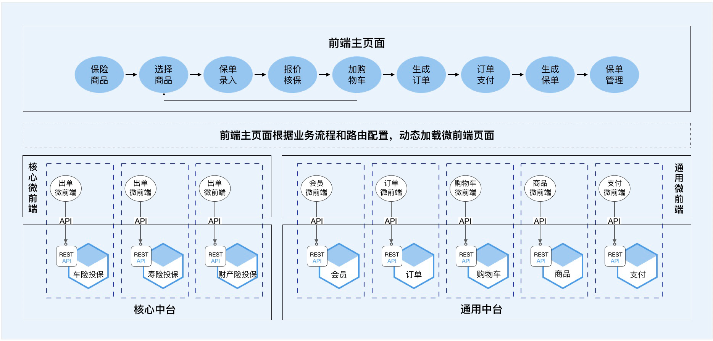
- 微服务
- 微前端
- 业务单元
- 微服务与微前端组合为一个业务单元。由一个中台团队完成业务单元的开发、集成、测试和部署，确保业务单元内页面操作和业务逻辑正确。
- 前端主页面
- 前端主页面类似门户，包括页面导航以及部分通用的常驻主页面的共享页面，比如购物车。前端主页面和所有微前端应统一界面风格，符合统一的前端集成规范。
- 业务流程说明
18 | 知识点串讲：基于DDD的微服务设计实例
19 | 总结（一）：微服务设计和拆分要坚持哪些原则？
微服务的演进策略
- 绞杀者策略
- 绞杀者策略是一种逐步剥离业务能力，用微服务逐步替代原有单体系统的策略。
- 它对单体系统进行领域建模，根据领域边界，在单体系统之外，将新功能和部分业务能力独立出来，建设独立的微服务。新微服务与单体系统保持松耦合关系。
- 随着时间的推移，大部分单体系统的功能将被独立为微服务，这样就慢慢绞杀掉了原来的体系统。绞杀者策略类似建筑拆迁，完成部分新建筑物后，然后拆除部分旧建筑物。
- 修缮者策略
- 修缮者策略是一种维持原有系统整体能力不变，逐步优化系统整体能力的策略。它是在现有系统的基础上，剥离影响整体业务的部分功能，独立为微服务，比如高性能要求的功能，代码质量不高或者版本发布频率不一致的功能等。
- 通过这些功能的剥离，我们就可以兼顾整体和局部，解决系统整体不协调的问题。
- 修缮者策略类似古建筑修复，将存在问题的部分功能重建或者修复后，重新加入到原有的建筑中，保持建筑原貌和功能不变。
3.另起炉灶
- 顾名思义就是将原有的系统推倒重做。
- 建设期间，原有单体系统照常运行，一般会停止开发新需求。而新系统则会组织新的项目团队，按照原有系统的功能域，重新做领域建模，开发新的微服务。在完成数据迁移后，进行新旧系统切换。
- 对于大型核心系统我一般不建议采用这种策略，这是因为系统重构后的不稳定性、大量未知的潜在技术风险和新的开发模式下项目团队磨合等不确定性因素，会导致项目实施难度大大增加。
不同场景下的领域建模策略
- 新建系统
简单领域建模
- 简单的业务领域，一个领域就是一个小的子域。在这个小的问题域内，领域建模过程相对简单，直接采用事件风暴的方法构建领域模型就可以了。
复杂领域建模
- 对于复杂的业务领域，领域可能需要多级拆分后才能开始领域建模。领域拆分为子域，甚至子域还需要进一步拆分。
- 对于复杂领域，我们可以分三步来完成领域建模和微服务设计。
- 第一步，拆分子域建立领域模型
- 第二步，领域模型微调
- 第三步，微服务的设计和拆分
- 单体遗留系统
- 如果我们面对的是一个单体遗留系统，只需要将部分功能独立为微服务，而其余仍为单体，整体保持不变，比如将面临性能瓶颈的模块拆分为微服务。我们只需要将这一特定功能，理解为一个简单子领域，参考简单领域建模的方式就可以了。在微服务设计中，我们还要考虑新老系统之间服务和业务的兼容，必要时可引入防腐层。
DDD 使用的误区
- 所有的领域都用 DDD
- DDD 从战略设计到战术设计，是一个相对复杂的过程，首先企业内要培养 DDD 的文化，其次对团队成员的设计和技术能力要求相对比较高。
- 在资源有限的情况下，应聚焦核心域，建议你先从富领域模型的核心域开始，而不必一下就在全业务域推开。
- 全部采用 DDD 战术设计方法
- 不同的设计方法有它的适用环境，我们应选择它最擅长的场景。DDD 有很多的概念和战术设计方法，比如聚合根和值对象等。聚合根利用仓储管理聚合内实体数据之间的一致性，这种方法对于管理新建和修改数据非常有效，比如在修改订单数据时，它可以保证订单总金额与所有商品明细金额的一致，但它并不擅长较大数据量的查询处理，甚至有延迟加载进而影响效率的问题。
- 而传统的设计方法，可能一条简单的 SQL 语句就可以很快地解决问题。而很多贫领域模型的业务，比如数据统计和分析，DDD 很多方法可能都用不上，或用得并不顺手，而传统的方法很容易就解决了。
- 因此，在遵守领域边界和微服务分层等大原则下，在进行战术层面设计时，我们应该选择最适合的方法，不只是 DDD 设计方法，当然还应该包括传统的设计方法。这里要以快速、高效解决实际问题为最佳，不要为做 DDD 而做 DDD。
- 重战术设计而轻战略设计
- DDD 是一种从领域建模到微服务落地的全方位的解决方案。
- 战略设计时构建的领域模型，是微服务设计和开发的输入，它确定了微服务的边界、聚合、代码对象以及服务等关键领域对象。领域模型边界划分得清不清晰，领域对象定义得明不明确，会决定微服务的设计和开发质量。没有领域模型的输入，基于 DDD 的微服务的设计和开发将无从谈起。因此我们不仅要重视战术设计，更要重视战略设计。
- DDD 只适用于微服务
- DDD 是在微服务出现后才真正火爆起来的，其实它一直也被应用在单体应用的设计中。
微服务设计原则
第一条：要领域驱动设计，而不是数据驱动设计，也不是界面驱动设计。
- 微服务设计首先应建立领域模型，确定逻辑和物理边界以及领域对象后，然后才开始微服务的拆分和设计。
- 而不是先定义数据模型和库表结构，也不是前端界面需要什么，就去调整核心领域逻辑代码。在设计时应该将外部需求从外到内逐级消化，尽量降低对核心领域层逻辑的影响。
第二条：要边界清晰的微服务，而不是泥球小单体。
- 微服务上线后其功能和代码也不是一成不变的。随着需求或设计变化，领域模型会迭代，微服务的代码也会分分合合。边界清晰的微服务，可快速实现微服务代码的重组。
第三条：要职能清晰的分层，而不是什么都放的大箩筐。
第四条：要做自己能 hold 住的微服务，而不是过度拆分的微服务。
- 微服务过度拆分必然会带来软件维护成本的上升，比如：集成成本、运维成本、监控和定位问题的成本。企业在微服务转型过程中还需要有云计算、DevOps、自动化监控等能力，而一般企业很难在短时间内提升这些能力，如果项目团队没有这些能力，将很难 hold 住这些微服务。
- 如果在微服务设计之初按照 DDD 的战略设计方法，定义好了微服务内的逻辑边界，做好了架构的分层，其实我们不必拆分太多的微服务，即使是单体也未尝不可。随着技术积累和能力提升，当我们有了这些能力后，由于应用内有清晰的逻辑边界，我们可以随时轻松地重组出新的微服务，而这个过程不会花费太多的时间和精力。
微服务拆分需要考虑哪些因素？
- 基于领域模型
- 基于业务需求变化频率
- 识别领域模型中的业务需求变动频繁的功能，考虑业务变更频率与相关度，将业务需求变动较高和功能相对稳定的业务进行分离。这是因为需求的经常性变动必然会导致代码的频繁修改和版本发布，这种分离可以有效降低频繁变动的敏态业务对稳态业务的影响。
- 基于应用性能
- 基于组织架构和团队规模
- 基于安全边界
- 基于技术异构等因素